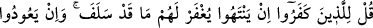

orduya katılanların dışında araplardan iki bin kişi kiralamış ve onlara kırk ukiyye, yani
1600 miskal altın harcamıştır. Kâfirlerin bozuk bir gaye uğruna, insanları Allah
yolundan saptırmak için nasıl cesâretle mallarını harcadıklarına bir bakın! Halbuki
müslümanlardan, kalbleri Allah’ın muhabbet ve rızasına çekmek uğruna malını
harcayanlar gâyet azdır. O halde nefsi ülfet ettiği şeyden, yani mal sevgisinden
koparmak lazımdır.
Cüneyd (k.s.) buyurur ki: “Biz tasavvufu boş sözlerle elde etmedik. Fakat açlık,
dünyayı terk, nefsin ülfet ettiği ve güzel gördüğü şeylerden uzaklaşmakla elde ettik.”
Ebû Saîd el-Hudrî (r.a.)’den rivayete göre bir adam:
“–Yâ Rasûlallah, insanların en faziletlîsi kimdir?” diye sordu. Rasûlullah (s.a.v.):
“–Canıyla ve malıyla Allah yolunda cihad eden mümindir.” buyurdu. Adam:
“–Ondan sonra kim faziletlidir?” diye sordu. Peygamberimiz (s.a.v.) bu kez:
“–Bir köşeye çekilip Rabbine kulluk eden ve şerrinden insanları kurtaran
kimsedir.” buyurdu.[27]
Bu hadiste uzletin fazîletine delil vardır. Zaman bozulup fitne zuhur edince ve
sıkıntılar üst üste binip insanlar değişince uzlete çekilmek güzel görülmüştür. Nitekim
sahabeden bazıları böyle yapmıştır. Rasûlullah (s.a.v.) durumlar değişip insanlar
ihtilafa düştüklerinde ve dedikodu çoğaldığında uzlete çekilip evlerin köşelerinde
kalmayı, kılıçları kırmayı, onların yerine hurma ağaçlarından ve değnekler edinmeyi
emrederdi.
İmam Gazzâlî demiştir ki: “Selef-i sâlihîn kendi zamanlarında ortalıktan kaybolup
uzlete çekilmenin gerekliliği üzerinde icmâ etmişlerdir. Kendileri de bunu tercih edip
başkalarına da bu tavsiyede bulunmuşlardır. Şüphesiz onlar nasihat vermeye ehil
kimselerdi. Onlardan sonra gelen zaman da onlarınkinden daha hayırlı olmamış, bilakis
daha belâlı ve acılı olmuştur.”
Hâfız der ki:
Sen ömür ve sabır dile, çünkü oyuncu felek
Bundan daha şaşılacak binlerce oyun oynar
Nitekim başka bir beyitte şöyle denilir:
Eğer bu böyle devam eder başka bir şey zuhur etmezse
Ne ölene ağlansın ne de doğana sevinilsin,
Allah’ım, bizi sabredenlerden kıl!